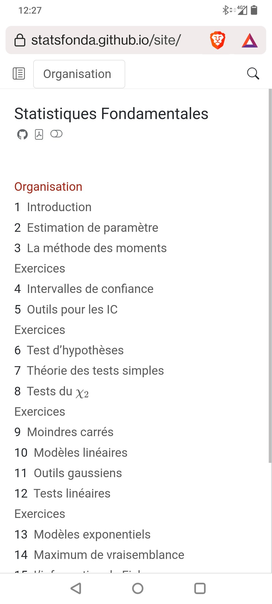

Simon Coste - Université Paris-Cité
2025
Étant donnée une loi de probabilité \mathbb{P}, que peut-on dire sur les réalisations empiriques d’une variable aléatoire X de loi \mathbb{P} ?
Étant données des réalisations x_1, \ldots, x_n d’une variable aléatoire X de loi \mathbb{P}, que peut-on dire sur \mathbb{P} ?
Le langage de base : modèles, estimateurs, intervalles de confiance
Théorie des tests
Modèles linéaires
Maximum de vraisemblance et théorie de l’information
Sujets cools : Power laws, Kolmogorov-Smirnoff, James-Stein ?
